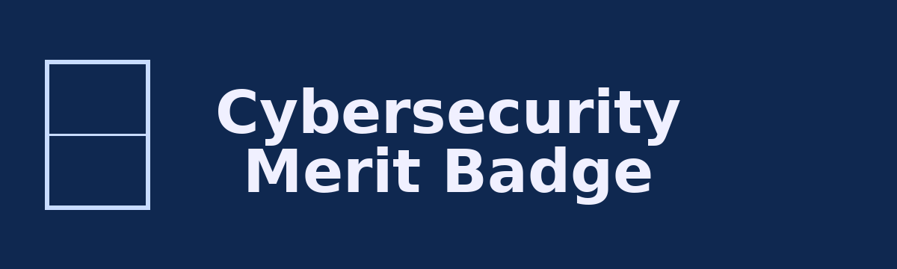

Cybersecurity Merit Badge

:material-shield-lock: :material-account-group:
Scouting America
Presenter: __________________
Date: __________________
Speaker notes (counselor): Introduce yourself, your background, and how cybersecurity shows up in daily life (phones, games, school). Set expectations for a respectful, interactive session.
Links: scouting.org • CISA – Cybersecurity
Agenda
- Safety
- Ethics
- Fundamentals
- Threats & Attacks
- Cyber Defenses
- Cryptography
- Internet of Things (IoT)
- Activities & Competitions
- Careers & Next Steps
Speaker notes (counselor): Explain that this is a high-level tour. Activities and requirements will be spread across today and follow-up work. Keep pace brisk but pause often for questions.
1. Digital Safety :material-cellphone-lock:
Key ideas
- Your digital footprint lasts a long time.
- Privacy settings control who sees what.
- Physical safety matters when using tech.
Speaker notes (counselor): Ask: “What’s something online you posted and later deleted?” Use it to show that deletion doesn’t always mean it is gone.
Links: FOSI • Common Sense Media
Protecting Your Digital Footprint :material-incognito:
Do:
- Lock down social media profiles.
- Turn off unnecessary location sharing.
- Review app permissions regularly.
- Avoid posting: home address, school schedule, daily routine.
Speaker notes (counselor): Quick demo of privacy settings on a test account if possible. Emphasize “share with friends, not with the whole world.”
Link: Stay Safe Online
Physical Safety with Devices :material-human-male-height-variant:
- Sit with good posture; screen at eye level.
- Take screen breaks (e.g., 20–20–20 rule).
- Avoid “text neck” and strain injuries.
- Do not walk, bike, or drive while looking at screens.
Speaker notes (counselor): Lead a 30-second stretch break. Ask who has felt eye strain or sore neck from gaming or scrolling.
Links: Mayo Clinic ergonomic tips; American Academy of Ophthalmology – Digital Eye Strain
2. Ethics Online :material-scale-balance:
Scout Law in Cyberspace
- Trustworthy – Don’t lie, cheat, or impersonate others online.
- Helpful – Report cyberbullying or scams.
- Kind – No harassment or pile-ons on social media.
Speaker notes (counselor): Ask Scouts to pick a Scout Law point and give one “online” example. Write a few on a board.
Link: Scout Law
Ethical vs. Unethical Behavior :material-gavel:
Ethical:
- Reporting a vulnerability instead of abusing it.
- Respecting others’ privacy and data.
Unethical:
- Using someone’s unlocked phone or computer.
- Shoulder-surfing passwords.
- “Just looking around” in systems you’re not authorized to use.
Speaker notes (counselor): Present 2–3 scenarios and have Scouts vote thumbs-up/ thumbs-down on whether it’s ethical.
Link: CompTIA – Ethical Issues in Cybersecurity
3. Cyber Fundamentals :material-laptop:

Systems That Need Protecting
- Personal devices (phones, laptops, tablets).
- Online accounts (email, gaming, school portals).
- Critical infrastructure (power, water, hospitals).
Speaker notes (counselor): Relate to their world: school Chromebooks, game accounts, photo backups, family Wi-Fi router.
Links: CISA – Cyber Threats • Future of Tech – Cybersecurity
CIA Triad :material-triangle-outline:

- Confidentiality – Only the right people can see the data.
- Integrity – The data is correct and unaltered.
- Availability – The data and systems are there when needed.
Speaker notes (counselor): Use simple examples:
- Confidentiality: private messages.
- Integrity: grades not being changed.
- Availability: game servers not going down.
Link: IBM – What is the CIA triad?
4. Threats, Vulnerabilities, Attacks :material-alert-octagon:

Key terms
- Vulnerability – a weakness or flaw.
- Threat – something that can exploit the weakness.
- Exploit – the actual method of attack.
Example: Outdated browser (vulnerability) + malicious site (threat) + exploit code = stolen password.
Speaker notes (counselor): Ask them to describe a real-world analogy (e.g., broken lock, burglar, crowbar).
Link: Khan Academy – Internet, Security
Malware :material-bug:
Examples:
- Virus – attaches to files, spreads when run.
- Worm – spreads automatically across networks.
- Trojan – looks useful, hides bad code.
- Ransomware – locks files until a ransom is paid.
Speaker notes (counselor): Pick one type of malware and explain briefly. Optional: show a news article about a recent ransomware case.
Link: CISA – Stop Ransomware
Public Wi-Fi Risks :material-wifi-alert:
Risks:
- Fake hotspots pretending to be real.
- Attackers intercepting traffic (“man in the middle”).
- Session hijacking (stealing logins).
Reduce risk:
- Use VPN if possible.
- Use only HTTPS websites.
- Avoid logging into sensitive accounts.
Speaker notes (counselor): Ask: “Who has used free Wi-Fi at a café or airport?” Explain a simple attack scenario.
Link: FTC – How to Safely Use Public Wi-Fi
Spoofing & Phishing :material-fish:
- Spoofing – pretending to be someone else (fake email address, caller ID, website).
- Phishing – tricking you into clicking a bad link or giving away information.
Warning signs:
- Urgent threats (“your account will be deleted”).
- Spelling mistakes or odd grammar.
- Weird sender addresses or URLs.
Speaker notes (counselor): Show a sample fake email vs real one. Ask Scouts to spot the red flags.
Phishing quiz: Google Phishing Quiz
Current Events :material-newspaper-variant:
Do one (for requirement discussion later):
- Read about a recent breach or malware attack.
- Or watch a cyber-themed movie or read a book.
Explain:
- What happened?
- How did it happen (roughly)?
- Who was affected?
Speaker notes (counselor): Have 1–2 short article examples ready; keep it focused on lessons, not fear.
Links: Krebs on Security • SecurityWeek
Your Attack Surface :material-radar:
Your attack surface includes:
- Email accounts.
- Social media and gaming accounts.
- Phones, tablets, laptops.
- Home Wi-Fi and routers.
- Cloud storage and backups.
- Smart/IoT devices.
Speaker notes (counselor): Ask Scouts to list everything of theirs that connects to the internet. Use that list later for a handout activity.
Suggested video search: “What is an attack surface?”
5. Cyber Defenses :material-shield-check:
Technologies that help defend systems:
- Firewalls – block unwanted traffic.
- Antivirus / anti-malware – detect and remove malware.
- VPN – encrypts internet traffic.
- Access controls – accounts and permissions.
- IDS/IPS – monitor and block suspicious activity.
Speaker notes (counselor): Map each to the CIA Triad quickly (e.g., firewall mainly helps availability and confidentiality).
Link: CISA – Cyber Essentials
Why Updates Matter :material-update:
Software updates:
- Fix security vulnerabilities.
- Patch bugs.
- Add new protections.
Speaker notes (counselor): Live demo: show how to check for updates on a demo device or screenshots. Emphasize that delaying updates keeps known holes open.
Links: CISA – Secure Our World • Code.org – How Not to Get Hacked
System Security Tasks :material-clipboard-check-outline:
Examples of tasks Scouts can do (with permission):
- Create or change to a strong password.
- Turn on multi-factor authentication (MFA).
- Install and configure a password manager.
- Run an antivirus scan.
- View running processes or network connections.
- Back up a phone or computer.
- Make a home security checklist and fix one issue.
Speaker notes (counselor): Use these as menu items for labs and homework. The handouts in this site support several of these tasks.
Links: CISA – Password Tips • Khan Academy – Computer Security
6. Cryptography :material-lock:

Where encryption is used:
- HTTPS websites.
- Messaging apps (end-to-end encrypted).
- Disk encryption on devices.
Why it matters:
- Keeps information private.
- Protects data if devices are lost.
- Prevents tampering in transit.
Speaker notes (counselor): Quick explanation of “scrambling” data, and needing a key to unscramble it.
Link: Khan Academy – Cryptography
Is This Website Encrypted? :material-web-lock:
Check for:
- HTTPS in the URL.
- A lock icon in the browser.
- A valid certificate (advanced).
Speaker notes (counselor): Show a browser; compare http://example.com and https://example.com.
Link: MDN – HTTPS
Cryptography Activity Choices :material-lightbulb-on-outline:
Scouts may do one of:
- Create a substitution cipher and use it.
- Use an end-to-end encrypted messaging app.
- Generate a hash/checksum for a file and compare after a change.
- Create a PGP/GPG key and send an encrypted email (with help).
Speaker notes (counselor): Ciphers are easiest in-group; hashing and PGP are good stretch goals for older Scouts. Handout provided.
Tools: search “online substitution cipher tool”, “SHA256 online hash calculator”.
7. IoT & Connected Devices :material-router-wireless:

Examples of internet-connected devices:
- Smart speakers and displays.
- Smart TVs and streaming sticks.
- Fitness trackers and watches.
- Home security cameras and doorbells.
- Smart thermostats and lights.
Risks:
- Privacy (recording audio/video).
- Weak passwords and outdated firmware.
- Devices used in botnets or attacks.
Speaker notes (counselor): Ask Scouts what smart devices they have at home. Discuss how to secure them (updates, strong passwords, guest network).
Link: IBM – What is IoT?
8. Activities & Competitions :material-gamepad-variant:

Examples:
- CyberPatriot – team-based defense of virtual systems.
- picoCTF – beginner-friendly hacking puzzles.
- AFA CyberCamps, National Cyber League, and others.
Speaker notes (counselor): Highlight that these can go on college and job applications. Encourage forming a troop team.
Links: CyberPatriot • picoCTF
9. Cybersecurity Careers :material-briefcase-account:

Some roles:
- Security Analyst (blue team).
- Penetration Tester / Ethical Hacker (red team).
- Incident Responder.
- Digital Forensics Specialist.
- Security Architect / Engineer.
Speaker notes (counselor): Discuss basic education (IT, CS, networking) and common certs (Security+, CEH, etc.). Ask who might be interested.
Link: CyberSeek – Career Pathway
Closing :material-handshake-outline:
Cybersecurity is about:
- Protecting people, not just machines.
- Making smart, ethical choices online.
- Using skills to help your community.
Questions?
Speaker notes (counselor): Summarize which requirements were covered and which require follow-up work or homework. Encourage Scouts to keep exploring through competitions and personal projects.